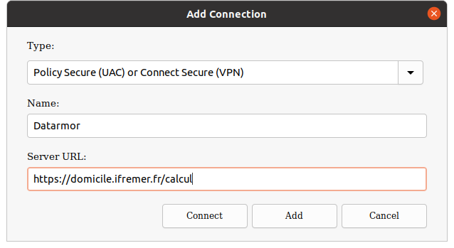
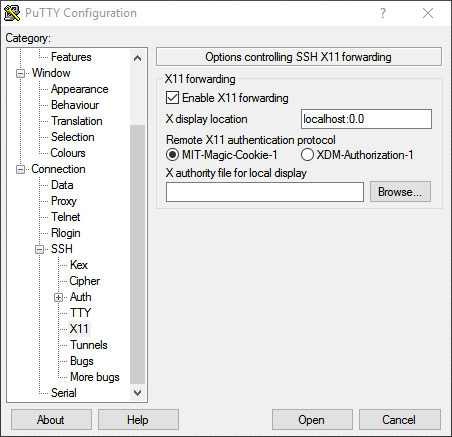
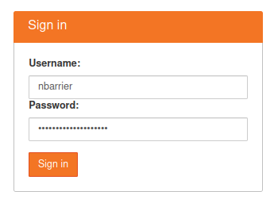
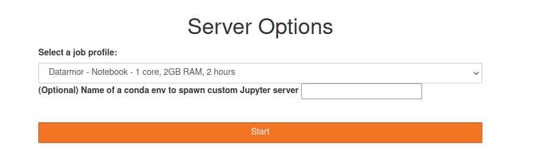

Datarmor documentation
![]()
What is Datarmor?
Applications
- Parallel computing (MPI, Fortran, C/C++)
- Data Analysis (Python, R, Matlab, Julia)
- JupyterHub (Notebooks, Jupyterlab)
- Machine Learning (TensorFlow)
- Data visualisation (VisIt, VMD)
Creating an account
To create an account, send me an email (nicolas.barrier@ird.fr) with:
- An institutional email address
- A phone number
- The names of your supervisors (if any)
- A short description of why you want to use Datarmor (projects, tools, etc.)
Support questions about Datarmor should be sent to assistance@ifremer.fr
Connection: Pulse Secure
Outside the Ifremer Network, PulseSecure is required. It can be downloaded here.
Install the right version depending on your OS:
- Windows 64:
PulseSecure.x86.msi - Mac Os X 64:
PulseSecure.dmg - Ubuntu 20.04:
pulsesecure_9.1.R12_amd64.deb - Ubuntu 18.04:
pulse-9.1R8.x86_64.deb
Connection: Pulse Secure
Now set-up a new connection as follows:

Connect to the Datarmor VPN using your extranet logins and leave it open until you have finished.
Connection: Terminal (Linux / Mac Os X)
For Linux/Mac Os X users, open a Terminal and types:
ssh -X nbarrier@datarmor.ifremer.frreplacing nbarrier by your intranet login. The -X option allows display (for use of text editors for instance). If the -X option does not work, use -Y.
For Mac Os X users, I recommend to install and use iTerm2 Terminal application, which is more user friendly than the default one.
Connection: Putty or MobaXTerm (Windows)
For Windows Users, it is recommended to use Putty or MobaXTerm

Connection: Putty (Windows)
To allow display, you need to enable X11 forwarding on the Connection > SSH menu:

RSA keys (Linux / Mac Os X)
To connect on Datarmor without typing the password, you need to use an ED25519 key. First, check if one already exists on your local computer:
ls $HOME/.ssh/id_ed25519.pubIf no such file, generate a key using
ssh-keygen -t ed25519and follows instructions. Then, send it to Datarmor (the intranet password is needed):
ssh-copy-id nbarrier@datarmor.ifremer.frUse your login instead of nbarrier. Now you should be able to connect to Datarmor without typing your password.
Datarmor: important folders
Important folders are:
$HOME: main folder (50 Go, backed-up). For codes and important things$DATAWORK: data folder (1 To, no back-up). For data.$SCRATCH: temporary folder (10 To, files older than 10 days are automatically removed). For running computation./dataref: folder containing some reference data (Copernicus data, atmospheric forcings, etc.)/home/datawork-marbec-pmod: Marbec DEN folder (limited access)
To recover deleted files from
$HOME, send an email to assistance@ifremer.fr
Modules (1/2)
To work with external tools, you need to load them into Datarmor’s memory. This is done as follows:
module load R ## load one module
module load java NETCDF ## load 2 modules
module load vacumm/3.4.0-intel ## load a specific versionTo list all the available modules:
module availModules (2/2)
To list the modules that are loaded:
module listTo unload a module:
module unload RTo unload all the modules at once:
module purgeDefault settings (1/2)
By default, the rm command does not ask you whether you are sure or not. Might be error prone. We might want to correct it.
To change some default behaviours, you need to create/edit a Linux configuration file.
gedit ${HOME}/.cshrc &The
&character implies that you will keep access to your terminal. Else, the terminal will be back once the text editor is closed.
Default settings (2/2)
In the .cshrc file, you can overwrite existing commands and create new ones:
alias x 'exit'
alias rm 'rm -i -v'
alias cp 'cp -i -v'
alias mv 'mv -i -v'You can also create environment variables (accessible via $):
setenv R_LIBS_USER $HOME/libs/R/libYou can also load your favorite modules automatically by adding the module load command in your .cshrc file:
module load RRunning a calculation: warning!
When you connect on Datarmor, you end-up on the login node. It is used for navigation, small file manipulation, text edition, code compilation but nothing more!
Absolutely no computation or heavy file manipulation should be done from here!!!
Heavy stuff should be done on a compute node, which are accessible by submitting a PBS job using the qsub command.
Running a job: interactive mode.
To run an interactive job, type the following command line
qsub -I -l walltime=01:00:00 -l mem=50MThe -l mem specifies the requested memory, -l walltime specifies the requested calculation time.
Job is ended by typing exit on the terminal.
Running interactive jobs imply that you leave your connection open until the job is finished.
Running a job: PBS script
To run a job in a non-interactive way, you need to create a .pbs file, which contains the instructions for running your job.
When done, run the calculation as follows:
qsub run_script.pbsJob output files will be provided in a run_script.pbs.oXXXX file, with XXXX the job ID.
Some examples are provided in Datarmor’s /appli/services/exemples/ folder (see the R and pbs sub-folders).
Running a job: PBS script (sequential)
#!/bin/csh
#PBS -l mem=100M
#PBS -l walltime=01:00:00
## Load the modules that will be used to do the job
source /usr/share/Modules/3.2.10/init/csh
module load R
## go to the directory where the job has been launched
cd $PBS_O_WORKDIR
## Run R
Rscript script.R >& output.log ## redirects outputs into logRunning a job: PBS script (parallel)
Parallel jobs are run in the same way, except that a queue (-q) parameter is added. It specifies the resources that you will use.
#!/bin/csh
#PBS -l mem=100M
#PBS -q mpi_2
#PBS -l walltime=01:00:00
cd $PBS_O_WORKDIR
source /usr/share/Modules/3.2.10/init/csh
module load NETCDF/4.3.3.1-mpt-intel2016
$MPI_LAUNCH program.exe >& outIn the above, 2 nodes, each containing 28 cores are requested, so 56 cores in total
Running a job: queues
The full description of Datarmor queues is provided here. Most important ones are:
sequentiel: the default one (single core)omp: shared-memory queue (several nodes with access to the same memory).mpi_N: distributed memory queue (several nodes with independent memories), withNranging from 1 (28 cores) to 18 (504 cores)big: distributed memory with 1008 cores.ftp: queue used to upload/download data to/from remote FTP serversgpuq: GPU queue.
Running a job: good practice
A good practice is to copy everything you need (code + data) to $SCRATCH and run your calculation from here:
#!/bin/csh
#PBS -l mem=100M
#PBS -q mpi_2
#PBS -l walltime=01:00:00
source /usr/share/Modules/3.2.10/init/csh
module load NETCDF/4.3.3.1-mpt-intel2016
cp -r $HOME/code.exe $SCRATCH
cp -r $DATAWORK/data $SCRATCH
cd $SCRATCH
$MPI_LAUNCH code.exe >& out
cp -r output $DATAWORKRunning a job: array
To repeat a job a certain number of times (if your model has stochasticity for instance), you can use job arrays:
#!/bin/csh
#PBS -l mem=10M
#PBS -l walltime=00:01:00
cd $PBS_O_WORKDIR
mkdir -p output_${PBS_ARRAY_INDEX}
touch output_${PBS_ARRAY_INDEX}/toto.txtTo run the job:
qsub -J 0-10 seq.arrayIt will run the job 11 times, with PBS_ARRAY_INDEX ranging from 0 to 10.
Running a job: chained jobs (Advanced users)
To run a job in a chained mode (i.e.job2 depends on job1), first run a job using the -h option (freeze the job):
qsub -h -N Job1 script1.pbsNow, run a second job depending on the result of the first job:
qsub -N Job2 -W depend=afterany:'qselect -N Job1 -u $USER' script2.pbsFinally, release the first job:
qrls 'qselect -N Job1 -u $USER'Note: replace
afteranybyafterok(no error) orafternotok(error)
Running a job: follow-up
To follow the status of your job:
qstat -u nbarrier| Status | Description |
|---|---|
| C | Job is completed after having run |
| E | Job is exiting after having run |
| H | Job is held |
| Q | Job is queued, eligible to run or routed |
| R | Job is running |
Running a job: follow-up
To suppress a job:
qdel 9255575.datarmor0 ## replace by the ID of the job to killAt the end of the job, check the email you receive and look for the following lines:
resources_used.mem=12336kb
resources_used.walltime=00:00:24If you requested more memory/walltime than you used, adapt your needs for the next time (cf. here for more details)
Exchange between Datarmor and local computer
Data exchange between local computer and Datarmor should not be done on the compute node, especially so for heavy files (no use of scp).
To exchange data, use the datacopy.ifremer.fr server, to which you can connect using FTP. Your intranet logins are required.
Note: you need to be on the Ifremer network. If not, the VPN should be on.
Is is advised to use FileZilla to do that
Exchange between Datarmor and local computer

Exchange between Datarmor and remote server
To recover data from a remote FTP server, submit a job on the ftp queue. An exemple is provided below (inspired from /appli/services/exemples/pbs/ftp.pbs)
#!/bin/csh
#PBS -q ftp
#PBS -l walltime=02:15:00
cd $DATAWORK
time rsync -av login@server:/source/folder /destination/folder/ >& outputThis will need some adaptation depending on the remote server.
Conda
Sometimes, you might need external tools that are not available on modules. One way to use these tools is to create your own Conda environments, which is possible on Datarmor (cf. Conda sur Datarmor).
First, edit your .cshrc file (using gedit $HOME/.cshrc &) and add:
source /appli/anaconda/latest/etc/profile.d/conda.cshThen, close and reopen the datarmor connection and type
which condato see if conda commands are accessible.
Conda: settings
Now, create a .condarc using gedit $HOME/.condarc & and write:
envs_dirs:
- /my/env/folder
- /home1/datahome/nbarrier/softwares/anaconda3-envs
- /appli/conda-env
- /appli/conda-env/2.7
- /appli/conda-env/3.6
channels:
- conda-forgeReplace the first line by a folder of your choice. It will contain your own environments.
Conda: using existing environments
To list the environments:
conda env listTo activate an environment:
conda activate pynglTo deactivate an environment:
conda deactivate pynglConda: creating environments
To create a new environment:
conda create --name new-envTo install packages in the activated environment:
conda install package_nameFor a R environment:
conda create --name r-env
conda activate r-env
conda install r r-baseTo remove an environment:
conda env remove --name r-envConda: running jobs
Conda can be used to run PBS jobs as follows:
#!/bin/csh
#PBS -l mem=4g
#PBS -l walltime=00:10:00
## for CSH
source /appli/anaconda/latest/etc/profile.d/conda.csh
## for BASH
#. /appli/anaconda/latest/etc/profile.d/conda.csh
conda activate myconda
python toto.py >& outputJupyterhub
In order to process data in a fancy way, you can use Jupyter. To do so, connect on https://datarmor-jupyterhub.ifremer.fr/ with your Intranet login.

Note: you also need to be on Ifremer Network or with the Datarmor VPN activated
Jupyterhub
Now, select the resources that you want (core + memory)

Warning: do not specify an optional environment
Jupyterhub
When the server is on, click on the New button and choose the Conda environment of your choice.

Jupyterhub: personal Conda environments
To use Jupyter with your own R, Python or Matlab environments, you will need to install the following additional libraries to your Conda environments:
conda install r-irkernel ## for R
conda install ipykernel ## for Python
conda install matlab_kernel ## for matlabTo use Jupyter with Julia, run Julia (installed with conda) from your environment and type:
using Pkg
Pkg.add("IJulia")Jupyterhub: manual installation of kernel
If all your R libraries have been installed with a R version provided by Datarmor, you must manually install the R Kernel. To do so:
- Activate the JupyterHub environment of Datarmor:
conda activate jupyterhub
Load the R module of your choice, for instance
module load R/3.6.3-intel-cc-17.0.2.174Open an R console by typing
R. Then type:install.packages('IRkernel') IRkernel::installspec(name = 'my-r', displayname = 'My R')Leave the R console (
quit()). You should have a new folder in$HOME/.local/share/jupyter/kernels/my-r.Type
echo $LD_LIBRARY_PATHSand copy the output that is prompted in the Terminal.In the
my-rfolder, edit thekernel.jsonfile and edit it by adding aenvvariable that contains the output of theLD_LIBRARY_PATH. It should look like this{ "argv": ["/appli/R/3.6.3-intel-cc-17.0.2.174/lib64/R/bin/R", "--slave", "-e", "IRkernel::main()", "--args", "{connection_file}"], "display_name": "R/3.6.3-intel-cc-17.0.2.174", "language": "R", "env": {"LD_LIBRARY_PATH": "..."} }Restart your JupyterHub server. You should see your environment.
Datarmor acknowledgements
To acknowledge Datarmor on your publications, add the following lines to your paper:
The authors acknowledge the Pôle de Calcul et de Données Marines (PCDM, http://www.ifremer.fr/pcdm) for providing DATARMOR storage, data access, computational resources, visualization and support services.